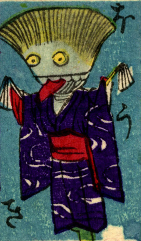

箒；ホウキ，女；オンナ

振袖を着た箒の化物。赤い舌を出している。両腕はハタキになっている。
著作者：豊貞／出典：親書誌：U426_nichibunken_0225：大新板ばけ物ずくし；オオシンバンバケモノズクシ／日付：2010／資源識別子：U426_nichibunken_0225_0027_0000
Copyright (c)2010- International Research Center for Japanese Studies, Kyoto, Japan. All rights reserved.